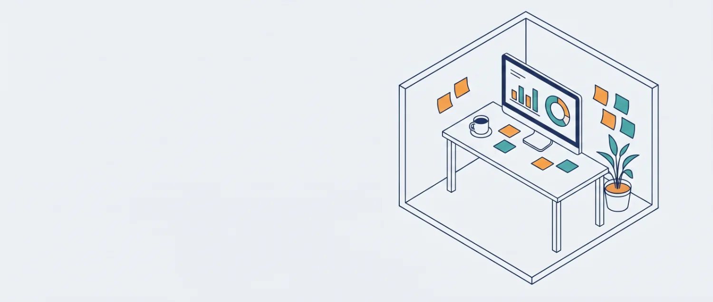

Hoş geldiniz
Rehberlik servisinin bugünkü özeti

Yükleniyor…
__IK_gundem__Bugünün Ajandası Tüm gündem →
Yükleniyor…
__IK_uyari__Takip Bekleyen Öğrenciler Tümü →
Yükleniyor…
__IK_rapor__Son 7 Gün — Günlük Görüşme Sayısı
Yükleniyor…
__IK_hedef__Görüşme Konusu Dağılımı (Bu Ay)
Yükleniyor…
__IK_ogrenciler__Son Görüşülen Öğrenciler
| Öğrenci | Sınıf | Tür | Konu | Tarih |
|---|---|---|---|---|
| Yükleniyor… | ||||